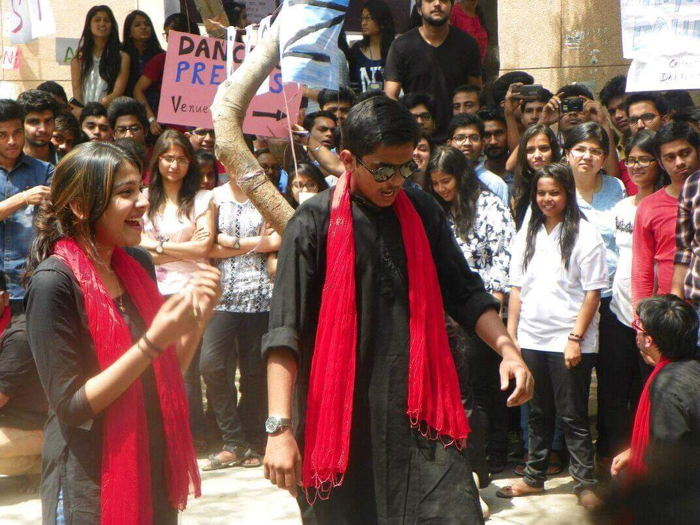
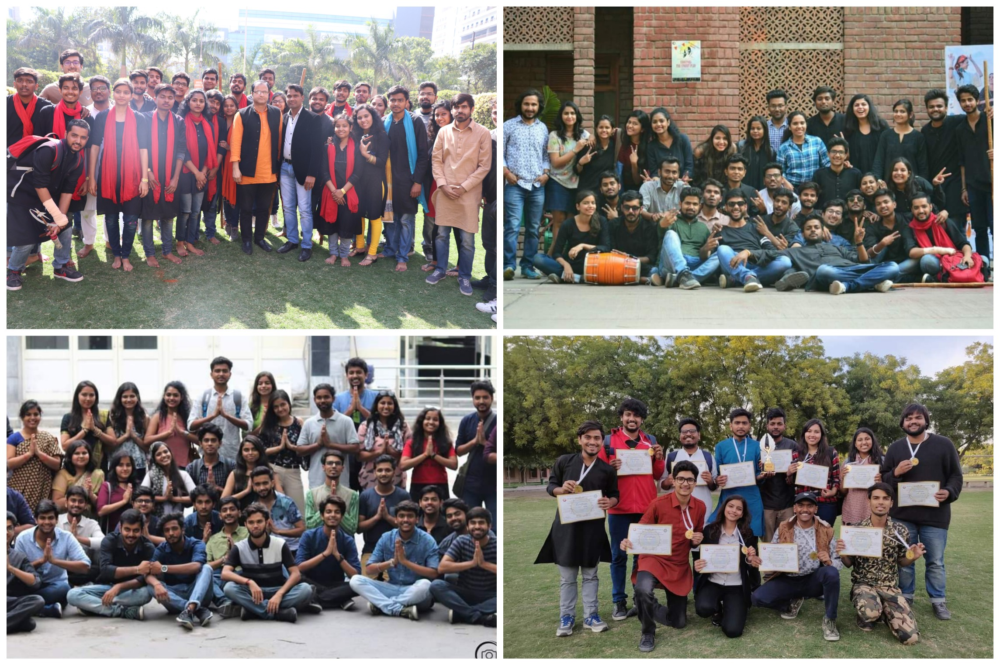
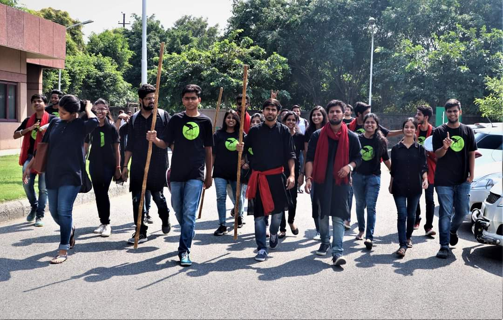

illuminati Dramatics Society is the largest society of my college, JSS Academy of Technical Education, Noida. When I joined the college back in 2015 and we were introduced to the college societies, illuminati was the one which I wanted to join as I am very fond of acting in plays and had done several plays in my school days also. About 2-3 months later, auditions were announced and I was excited to give my best there. I did the lal-chowk act from the movie Haider and it went great. A few weeks later, results were announced and I had made it into the society. And then began the long array of plays, nukkad nataks, inter-college competitions and everything I wanted to do during my college.
Zealicon
Zealicon is the annual techno-cultural fest of JSS. I played my first role in college during a nukkad natak(street play) competition during zealicon’ 16 and that was the beginning of my journey from a member in the first year to the president of the society in fourth year. Three more Zealicon followed, and I performed in uncountable events- stage plays, street plays, mime, stand-up comedy and what not.
My first performance of college in a Street Play during Zealicon' 16
Inter-College Competitions
Inter-college competitions were an integral aspect of illuminati. We used to participate in as many competitions as we could. This was the part I liked the most, preparing scripts for the play, continuous all-day rehearsals and then entering into the competition with what you have prepared with all your heart. We also used to participate in ‘Manthan’ which is the largest street play festival organize by SSCBS, Delhi University. Some of the inter-collge event I participated in are as follows-
2016
1- SymFiesta’ 16 - Symbiosys Law School, Noida – Street Play
2- Impressions’ 16 – JIIT, Noida – 2nd Prize – Street Play
3- SRM Modinagar – 2nd Prize – Street Play
4- Pulse’ 16 – AIIMS, Delhi – 1st Prize – Twisted Film
2017
1- SymFiesta’ 17 - Symbiosys Law School, Noida - 2nd Prize – Street Play
2- Impressions’ 17 – JIIT, Noida – 2nd Prize – Street Play
3- Manthan’ 17 – Performed in DLF Mall of India, Noida
4- Pulse’ 17 – AIIMS, Delhi – 1st Prize – Twisted Film
5- ABES, Ghaziabad – 1st Prize – Street Play
2018
1- SymFiesta’ 18 - Symbiosys Law School, Noida - 2nd Prize – Street Play
2- Impressions’ 18 – JIIT, Noida – 2nd Prize – Street Play
3- Manthan’ 18 – Performed in Shipra Mall, Ghaziabad
I became the President of my Society in July 2018 during my fourth year and now my role was not to participate in the events but handle other aspects of illuminati.
illuminati Dramatics Society, at various colleges and competitions
Heading illuminati
In my final year, I was selected as the President of illuminati. It was a moment of happiness and pride to be the head of the society with which I was associated for the past 3 years. Now, my responsibility was not to create plays and performances but to handle the back-end managerial things. Things like organizing the auditions for taking in the freshers, keeping an eye on various teams like- Social Media, Public Relations etc, Managing the finances of the society, creating the budget and getting it approved from the college administration, managing my team during the intra and inter-college competitions. To summarize, managing the whole society in general. Being the president of illuminati was quite a learning experience for me.
JSSATEN Dramatics Society - illuminati